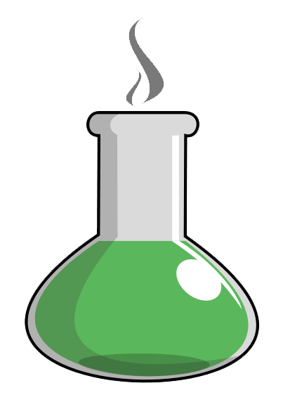

Polymerization

In the presence of strong acids, THF converts to a linear polymer called poly (tetramethylene ether) glycol (PTMEG), also known as polytetramethylene oxide (PTMO).
This polymer is primarily used to make elastomeric polyurethane fibers like Spandex.
As a solvent

Probably one of the most common applications is as a solvent. A solvent is used to create solutions, and in this case THF serves to dissolve or form solutions with other organic compounds. In the chemical industry, THF is the solvent of choice in making polyvinyl chloride (PVC), which is the plastic that a lot of our indoor plumbing and sprinkler system pipes are made out of.
THF is also a popular solvent choice for small-scale laboratory experiments, mainly because it can dissolve a wide variety of organic compounds and has a relatively low boiling point. The low boiling point is convenient because it makes the solvent easy to remove from the chemical reaction by evaporation.
Laboratory use
In the laboratory, THF is a popular solvent when its water miscibility is not an issue. It is more basic than diethyl ether and forms stronger complexes with Li+, Mg2+, and boranes. It is a popular solvent for hydroboration reactions and for organometallic compounds such as organolithium and Grignard reagents.Although similar to diethyl ether, THF is a stronger base.Thus, while diethyl ether remains the solvent of choice for some reactions (e.g., Grignard reactions), THF fills that role in many others, where strong coordination is desirable and the precise properties of ethereal solvents such as these (alone and in mixtures and at various temperatures) allows fine-tuning modern chemical reactions.